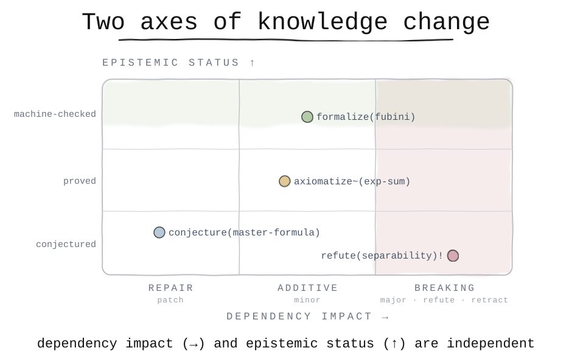

A specification for adding human- and machine-readable meaning to commits that record mathematical proofs and scientific findings.

Software change has one scale, backward compatibility. Knowledge change has two independent axes, and keeping them apart is the design.
| Axis 1: dependency impact | Axis 2: epistemic status | |
|---|---|---|
| answers | does this invalidate what depends on it? | how strongly is it established now? |
| lives in | the type and ! (the SemVer analog) | a Status: footer |
| mutability | immutable, a fact about history | mutable, advanced by later commits |
| examples | refute!, retract!, formalize | math.conjectured → machine-checked |
Because they are separate, closing a sorry later is a new
formalize commit that moves Status: math.open to
math.machine-checked. You never rewrite history, and one #print axioms
result is both an axis-2 status (axiomatised) and an axis-1 caveat
(an AXIOM: footer).
Unchanged from Conventional Commits. Every CKC commit is a valid one.
<type>[~][(scope)][!]: <description>
[body]
[footers] # git-trailer key: value, repeatable; relations and provenance
! or BREAKING CHANGE: means it
invalidates dependents (axis 1). ~ is an optional at-a-glance flag for a
trusted-base caveat; the footer is the record.
A profile is a domain vocabulary on top of the shared core. CKC ships two: proof for mathematics and formal proving (Lean and Mathlib are the reference; Rocq, Coq, Isabelle, and Agda work too), and science for empirical work. The type you choose implies the profile. Full detail: the spec.
Proof statuses bind to ground truth
(#print axioms):
math.machine-checked | clean |
math.axiomatised | cited axiom |
math.open | sorryAx |
sci.replicated, measured | empirical |
sci.not-replicated, falsified | negative |
The BREAKING CHANGE analog, widening what
downstream rests on:
AXIOM: | proof, a cited axiom |
OPEN: | proof, a remaining sorry |
ASSUMES: | science, untested assumption |
UNREPLICATED: | science, single run |
Relations build the graph: Depends-On,
Proves, Refutes, Closes, Supersedes.
formalize(thm): close the d-fold separable factorization Lean: Sep.factorization Status: math.machine-checked Axioms: propext, Classical.choice, Quot.sound Closes: conjecture:master-formula
axiomatize~(lemma): cite the logarithmic rank bound Lean: Approx.rankBound Status: math.axiomatised AXIOM: Approx.rankBound (rank K = O(log 1/ε)) Cites: Braess & Hackbusch 2005
refute(claim)!: a counterexample blocks naive factorization Disproves: conjecture:naive-separable Status: math.disproved BREAKING CHANGE: conjecture:naive-separable withdrawn; the compensation result depends on it.
experiment(non-additive): rank K=1 vs K>1 on hard targets Status: sci.measured Metric: MSE Seed: 0..4 Hardware: 1 GPU UNREPLICATED: single machine, 5 seeds Closes: conjecture:rank-helps
More on the examples page.
The relation footers form a dependency graph of claims. From it, tooling can:
See the ClaimGraph page.